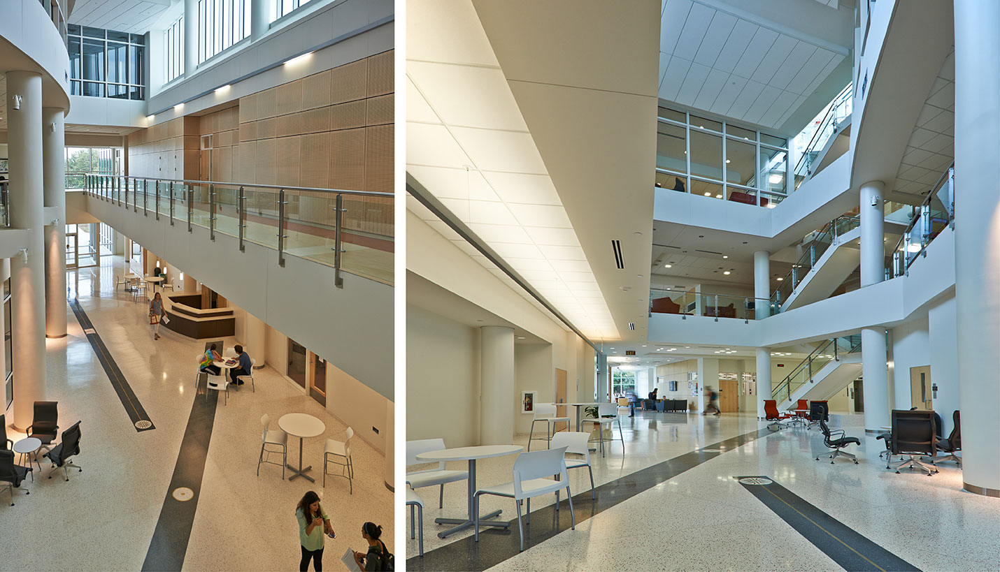
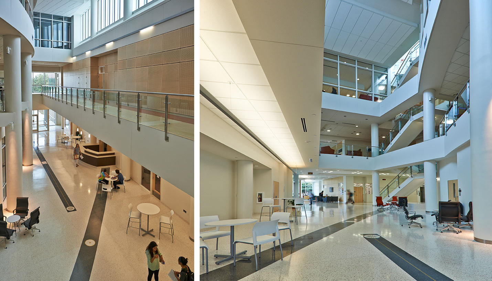
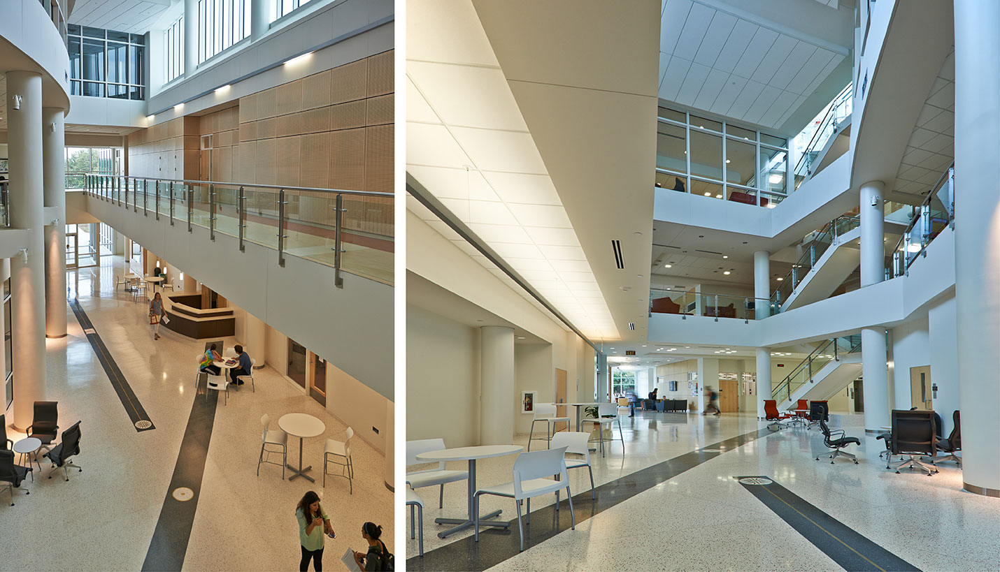
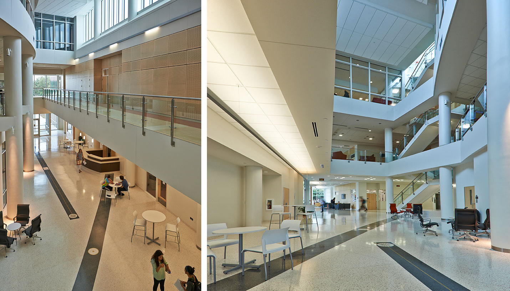

Partez pour un semestre à l'étranger pour étudier et améliorer la langue de votre choix et vous ouvrir aux nombreuses opportunités accessibles à l'international. Faire un semestre à l'étranger est le meilleur moyen de se plonger dans une nouvelle culture, et ainsi accelérer l’apprentissage de la langue grâce à une pratique quotienne.
L'université du Texas à Austin est une université américaine située dans la ville d'Austin, capitale du Texas, aux États-Unis....